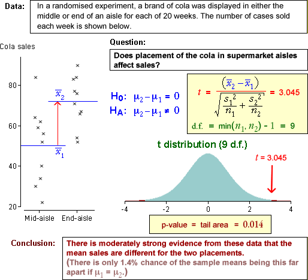

Testing for a difference between the two population means
When samples are obtained from two groups, we often want to assess whether there is any evidence of a difference between the groups. Differences between the groups may involve differences between the spreads, skewness or other features of the distributions in the two groups. However the difference of most practical importance is a difference between the means of the groups.
H0 : μ2 − μ1 = 0
HA : μ2 − μ1 ≠ 0
The summary statistic that throws most light on these hypotheses is the difference
between the sample means,
 .
Testing therefore involves assessment of whether this difference is unusually far from zero.
.
Testing therefore involves assessment of whether this difference is unusually far from zero.
Test statistic and p-value
The difference  is standardised (by dividing by an estimate of its standard deviation). If this test statistic has a large value, it suggests that there is a difference in the means. As in Chapter 7, the distribution of the test statistic is not normal, because we are estimating the standard deviations. However if the two groups really have the same means, µ1 = µ2 , its distribution can be approximated by a t distribution, whose degrees of freedom are the minimum of the degrees of freedom in the two separate samples, the minimum of (n1 - 1) and (n2 - 1).
is standardised (by dividing by an estimate of its standard deviation). If this test statistic has a large value, it suggests that there is a difference in the means. As in Chapter 7, the distribution of the test statistic is not normal, because we are estimating the standard deviations. However if the two groups really have the same means, µ1 = µ2 , its distribution can be approximated by a t distribution, whose degrees of freedom are the minimum of the degrees of freedom in the two separate samples, the minimum of (n1 - 1) and (n2 - 1).
To assess whether our observed difference is 'unusually' far from zero, we therefore compare this test statistic with the t distribution.

As with the hypothesis tests that we described in Chapter 7 (and indeed all other hypothesis tests), a p-value near zero gives evidence that the null hypothesis does not hold — evidence of a difference between the group means.
The p-value measures the strength of the evidence against the null hypothesis.
Examples
The diagram below shows how the p-value for testing whether the means in two groups are the same is evaluated and interpreted.

Use the pop-up menu to examine other data sets.
Properties of p-values
It is important to understand that a statistical hypothesis test cannot provide a definitive answer about whether two groups have different means. The randomness of sample data means that:
Simulation when the underlying means are the same (H0 is true)
The diagram below allows samples of size 20 to be selected from two populations, both of which are normal with mean 75 and standard deviation 8.
Take several samples and observe the variation in the resulting p-value. The p-values are usually greater than 0.1, so we would usually conclude that there is no evidence of a difference between the means.
However about 1/10 of the p-values are less than 0.1, 1/20 are less than 0.05 and 1/100 are less than 0.01.
There is a (small) probability of getting random data that misleadingly suggest that the means are different.
Simulation when the underlying means are different (HA is true)
In the next simulation, the underlying population means are 70 and 80 — a difference of 10.
Again take several random samples from the model. Observe that the p-value is usually very close to zero and we usually conclude that there is strong evidence that the population means are different.
However occasionally the sample means are closer and the p-value is larger.
There is a chance of getting a large p-value and concluding that there is no evidence of a difference. Having a larger sample size lessens the chance of this happening.